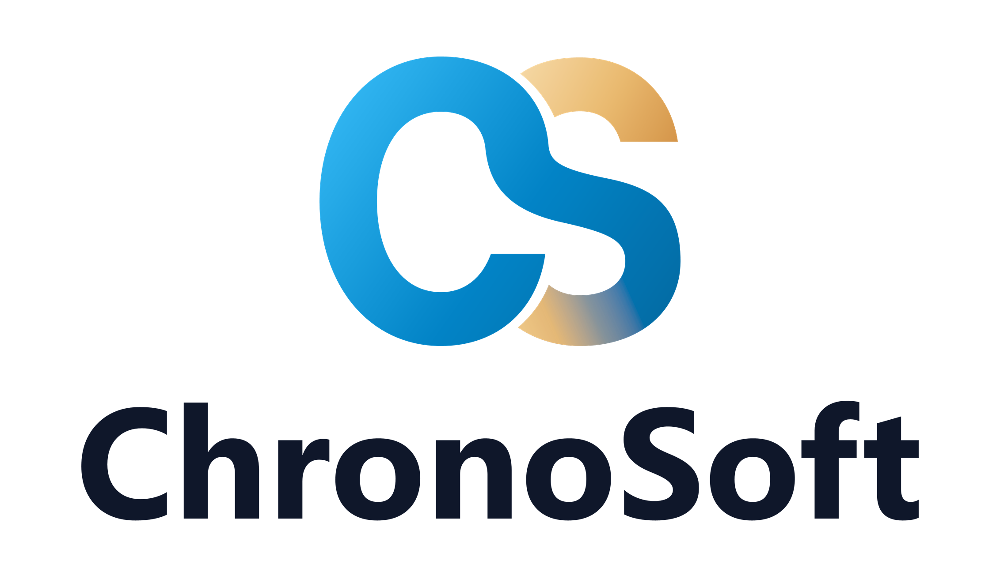
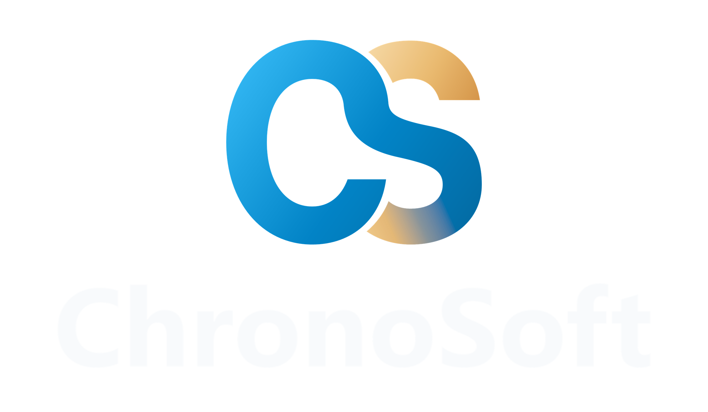
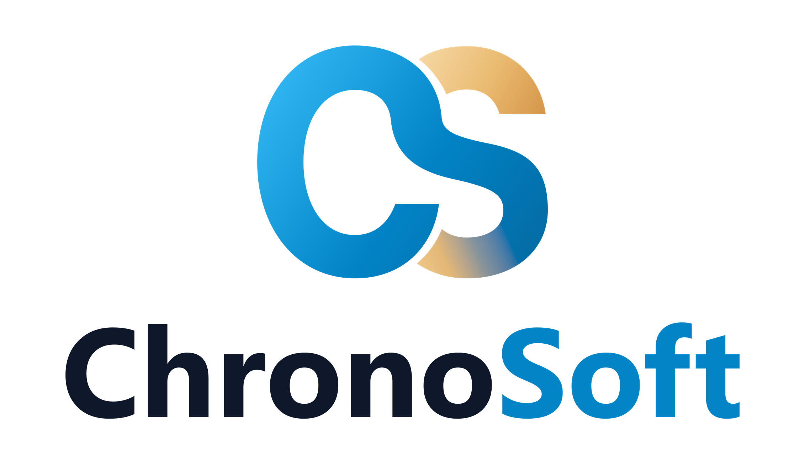
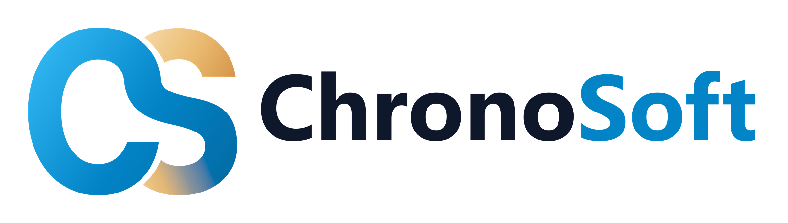
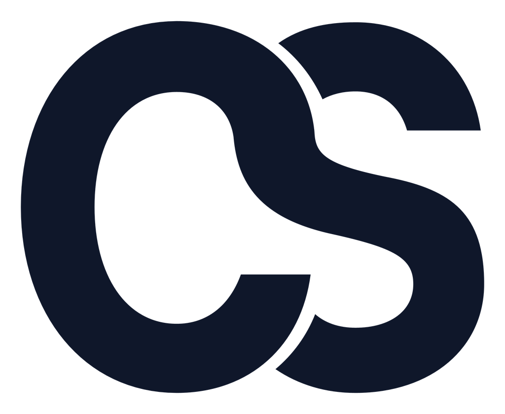
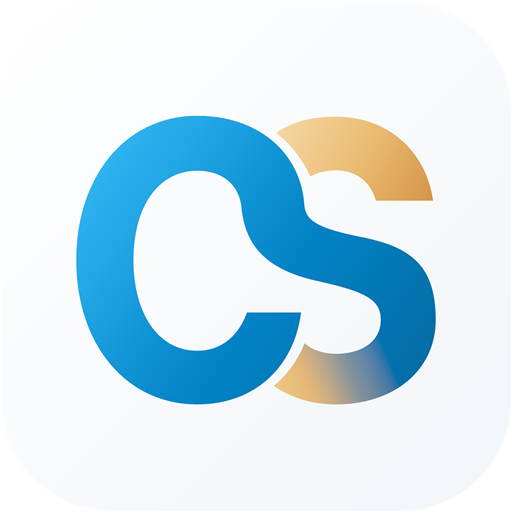

1. Logos Principales Apilados / Verticales (Reemplazo directo BLACK_LOGO / WHITE_LOGO)
Geometría exacta del monograma "CS" redibujada desde cero en curvas Bézier puras, sin bordes pixelados ni halos de recorte.

Vertical Claro (BLACK_LOGO) 2263×1321
Para fondos blancos o claros. Incluye copia lista en
compat/BLACK_LOGO.png.



Vertical Oscuro (WHITE_LOGO) 2263×1321
Para fondos oscuros. Texto blanco puro sin artefactos. Copia en
compat/WHITE_LOGO.png.





2. Logos Largos / Horizontales (Headers, Navbars, Facturas y Firmas)
Formato panorámico 2400×680 ideal para barras de navegación de ChronoPark, ChronoPOS y ChronoFact.





3. Logo Corto / Isotipo CS & Favicons (.ICO Multi-Resolución)
Símbolo "CS" aislado para sidebars colapsados, iconos de pestaña (16px a 256px), PWA y marcas de agua.


Favicons Web & App (.ICO) 16–256px
Contenedor
.ico con 6 capas embebidas (16, 32, 48, 64, 128 y 256 px).



4. Avatares & App Icons (Cuadrado, Redondeado iOS/Android y Circular)
Listos para WhatsApp Business, GitHub, LinkedIn, Instagram y lanzadores móviles en 1024×1024 y 512×512.
Avatar Dark Tech 1024×1024
Fondo Índigo Nocturno con halo cian sutil y monograma CS.



Avatar Light Clean 1024×1024
Fondo blanco/hielo suave para perfiles claros y directorios.


Avatar Corporate Gradient 1024×1024
Degradado Azul Chrono a Índigo con monograma blanco y oro.


5. Impresoras Térmicas ESC/POS (58mm y 80mm — Pie y Cabecera de Tickets)
Negros 100% puros sin tonos grises intermedios para evitar manchas en papel térmico y cumplir con el límite de < 30 KB.
Ticket Térmico Clásico 400×227
Reemplazo exacto de
chronosoft-ticket-logo.png con bordes vectoriales limpios.

Ticket Térmico Compacto (Ahorro Papel) 384×110
Diseño horizontal para tirillas de 58mm/80mm que reduce el largo del ticket a la mitad.


6. Paleta Oficial ChronoSoft
Alineada con los tokens de chrono-ui y el acento dorado característico del monograma CS.
Sky Cyan (Luz)
#38BDF8Chrono Primary Blue
#0284C7Deep Ocean Blue
#0369A1Chrono Champagne Gold
#EABA70 → #D49448Slate Indigo (Texto/Fondo)
#0F172ADark Void Background
#090D16